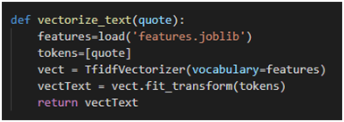
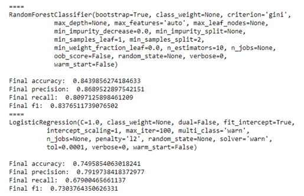

Machine Learning Project
Python - Flask - Machine Learning - Classification - SQL
During my Manipulating and Exploiting Data class I was assigned a machine learning project. The brief was to develop a program that reads text data, vectorizes it, applies predictions in a binary classification setting, and renders these predictions to the user. I was provided with a skeleton of a web application that uses the flask Python micro framework.
I designed my web app to classify whether a quote inputted by the user was written by Shakespeare or George R. R. Martin. The user was able to offer feedback as to whether the classification was correct and the results were stored in a database. The web app was also capable of pulling data from the database, calculating evaluation metrics and updating the model. Below I have included some content from my essay that accompanied the project, which details what the app does and how I went about creating it.
The web app uses the Flask micro framework to render the HTML pages and display data pulled from the database and input taken from the user. It has a simple and clean style, kept consistent across the site using CSS. The web app is made up of five pages. The first three guide the user through having their quote processed, and the other two allow the user to evaluate and update the model.
The home page explains what the web app does and provides a text box for the user to enter a quote into. If they click the predict button, their quote is used to create a prediction and they are taken to the submitted page.

The submitted page displays their input text with the prediction made by the model. The user then has the option to select if the prediction was correct or incorrect. If they choose to send feedback, they are taken onto the feedback received page.

The feedback received page displays their quote and feedback, as well as the five prior predictions made by the model. They then have the option to go back to the home page.
The home page also includes buttons for evaluating and updating the model. If the user clicks evaluate model, the app evaluates the current model and displays the information.
If the user clicks update model, the system adds new quotes to the data set and re-trains the model. It then takes the user to the page below, which displays the quotes that were added to the data.
One issue was that if a user entered a URL that didn’t exist, they were presented with the standard error page, so instead I added in an error handler to display the message below. Providing clear details about what has gone wrong and how to correct it makes the system much more user friendly.
Some areas for improving user interaction could be to deal with other types of errors, such as not being able to connect to the database, or the input text being too long. Adding validation to the input text box to restrict length and to the radio buttons to ensure one is selected when the ‘send feedback’ button is clicked would stop the user accidentally disrupting the system. Handling as many errors and exceptions as possible means that the user has a better experience using the app. Another area for improvement could be the overall design; research into what makes a good user interface and implementing these ideas as well as perhaps adding in some graphics could take the web app to the next level.
The project is connected to the MySQL database through a database class in the app.py Python file; the initialisation function has the host address, username and password, and database name in order to connect. The database holds one table that relates to the predictions made by the model. In order to be normal form, there is a primary ID so that each row is unique and each cell is single-value and contains one type of data. The table records the quote inputted by the user, the actual category, whether the prediction was correct or not and whether the quote has been added to the training data or not.
The first function in the database class inserts information from the web app into the database. The received_feedback function takes the quote, feedback and prediction from the web page and works out what the actual category is based on this information. It then calls the insert quote function with the quote, category and feedback as parameters, adding the information the database.

The next database function selects the five most recent quotes added to the quotes table. The received_feedback function calls this and saves it under the list result, which is used as a variable to render to the web page.
The final database function is used to call a procedure that returns from the database the quotes, and their binary category, that were predicted correctly and have not yet been added to the training data, as well as changing their ‘in_training_data’ status in the quotes table. The model_updated function calls the getNewTrainingData function to get the new quotes, then adds them to the allQuotes and allLabels arrays. I chose to do this as a procedure with a view because of the various different steps, it was easier to keep in one place and it allowed me to keep the correct information to return, whilst also allowing me to change values in the database.

The web app uses a bag of words model, where the feature words are extracted from the data set and are used to evaluate which are most associated with each class. I chose to use the TfidfVectorizer rather than CountVectorizor because it gives lower importance to words that appear regularly in both categories and gives higher importance to words that are unique to a category (Brownlee, J. [2017] A Gentle Introduction to the Bag-of-Words Model). I also chose to extract 100 feature words; when there was a higher amount, the model ended up being less accurate, whilst a lower amount didn’t change the accuracy. Each quote will then be represented by a vector with a length of 100, each value being a zero or a one, depending on whether the quote contains the feature word or not.
The original data for training the model consists of a text file for each of the two categories (Shakespeare and Martin), that contain quotes from each of the authors work. There was a lot more quotes for Shakespeare than Martin; when I vectorized the data and extracted the features, the following model had a very low accuracy. I combated this by cutting down the Shakespeare quotes used to the same amount as Martin quotes. This time when I vectorized the data, and trained the model, it had a much higher accuracy.
I added in a way to save a list of the feature words and then use them in the vectorize_text function, as the input text needs to be vectorized the same way as the model data. Whenever the model is updated and the data re-vectorized, the features list is also updated so that it is always the same features as used in the model being used to predict the outcome.
To train the model, I again chose to use the same amount of data for each category type as this seemed to give the highest accuracy. I tried out several classifier models, evaluating them to compare results and see which would be best for the data I had.
The Random Forest Classifier gave the best results, so I went with that one for the web app model.
Below is the evaluation metrics of the model. It has a fairly high accuracy and is relatively good for either category, although it is slightly better at predicting true negatives (true Shakespeares) than true positives (true Martins).
The web app is designed to update the data used to get the set of features and then the model is retrained. One issue is that since updating the model, the accuracy has dropped dramatically. The way the system is designed means a maintainer could just rerun the original data and model to get the higher accuracy back. A possible improvement tha could be implemented in a future update would be to stop the model updating if it means the accuracy will be lower than the original.